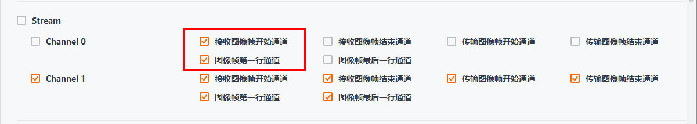
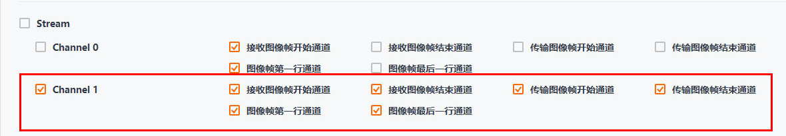
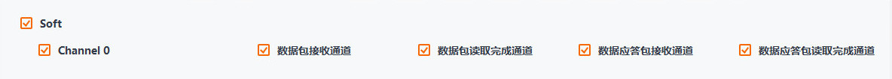
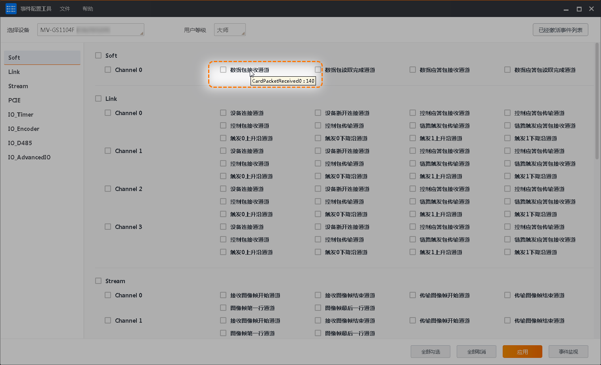
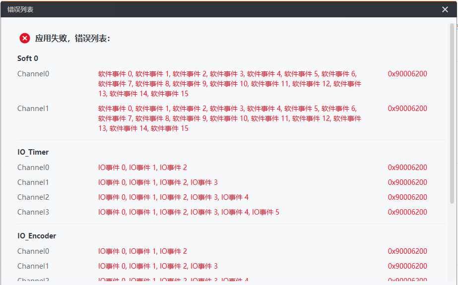
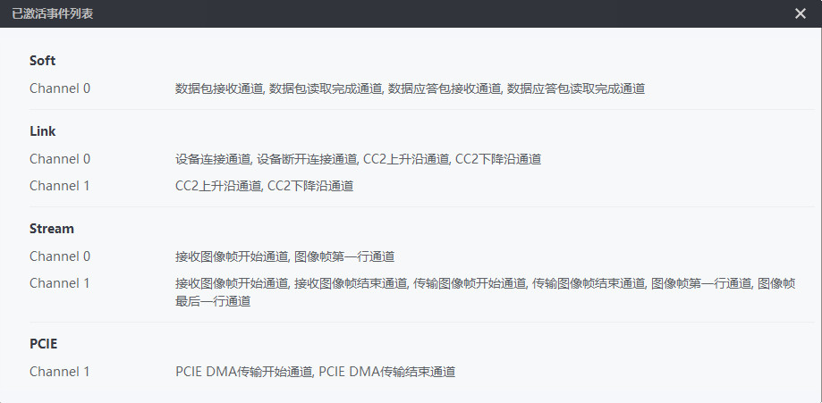

工具可对需要查看的采集卡事件进行勾选配置或导入导出操作。
可勾选或取消勾选单个事件。

图 1 单个事件勾选勾选某一事件类型下的单个Channel，可自动勾选当前Channel下的所有事件。再次点击后可取消所有勾选。

图 2 勾选Channel下的所有事件勾选某一事件类型，可自动勾选其所有Channel下的所有事件，再次点击后取消所有勾选。

图 3 勾选事件类型下所有事件单击工具右下角的全部勾选，可勾选该采集卡的所有事件，点击全部取消后取消所有勾选。
事件类型与事件源的相关介绍请见下表。
|
事件类型 |
事件名称 |
事件节点 |
事件说明 |
|---|---|---|---|
|
Soft |
软触发事件 |
Card Cmd Packet Received(From PC) |
数据包接收通道 |
|
Card Cmd Packet Transmitted(To Card) |
数据包读取完成通道 |
||
|
Card Ack Packet Received(From Card) |
数据应答包接收通道 |
||
|
Card Ack Packet Transmitted(To PC) |
数据应答包读取完成通道 |
||
|
Link |
通道事件 |
Locked Event |
设备连接通道 |
|
Unlocked Event |
设备断开连接通道 |
||
|
CC1 Rising/Falling Edge |
CC1上升沿/下降沿通道 |
||
|
CC2 Rising/Falling Edge |
CC2上升沿/下降沿通道 |
||
|
CC3 Rising/Falling Edge |
CC3上升沿/下降沿通道 |
||
|
CC4 Rising/Falling Edge |
CC4上升沿/下降沿通道 |
||
|
Stream |
帧事件 |
Receive Image Frame Start(From Camera) |
接收图像帧开始通道 |
|
Receive Image Frame End(From Camera) |
接收图像帧结束通道 |
||
|
Transmit Image Block Start(To PC) |
传输图像帧开始通道 |
||
|
Transmit Image Block End(To PC) |
传输图像帧结束通道 |
||
|
The First Line In Frame |
图像帧第一行通道 |
||
|
The Last Line In Frame |
图像帧最后一行通道 |
||
|
PCIE |
PCIE事件 |
PCIe DMA Start |
PCIe DMA传输开始通道 |
|
PCIe DMA Start |
PCIe DMA传输结束通道 |
||
|
IO_Timer |
定时器事件 |
Rising/Falling Edge |
上升沿/下降沿 |
|
IO_Encoder |
轴编码器事件 |
Rising/Falling Edge |
上升沿/下降沿 |
|
IO_D485 |
差分输入输出事件 |
In Rising/Falling Edge |
差分输入上升沿/下降沿 |
|
Out Rising/Falling Edge |
差分输出上升沿/下降沿 |
不同采集卡支持的事件不同，请以实际设备为准。

图 4 显示节点和枚举值
图 5 应用失败
图 6 已激活事件列表单击文件 > 导入，选择需要导入的etc文件并打开。
工具仅支持同型号采集卡的etc文件导入，若etc文件与待导入的采集卡型号不匹配，则提示“导入失败”。
导入成功后，工具中的事件将自动更新勾选状态并应用。
单击文件 > 导出，选择etc文件需要保存的路径，单击保存即可，默认保存路径为C:\Users\Administrator\MVS\Data\EventTool。
事件监视结果还可通过MVS客户端查看，具体操作步骤请查看MVS客户端用户手册事件监视章节。